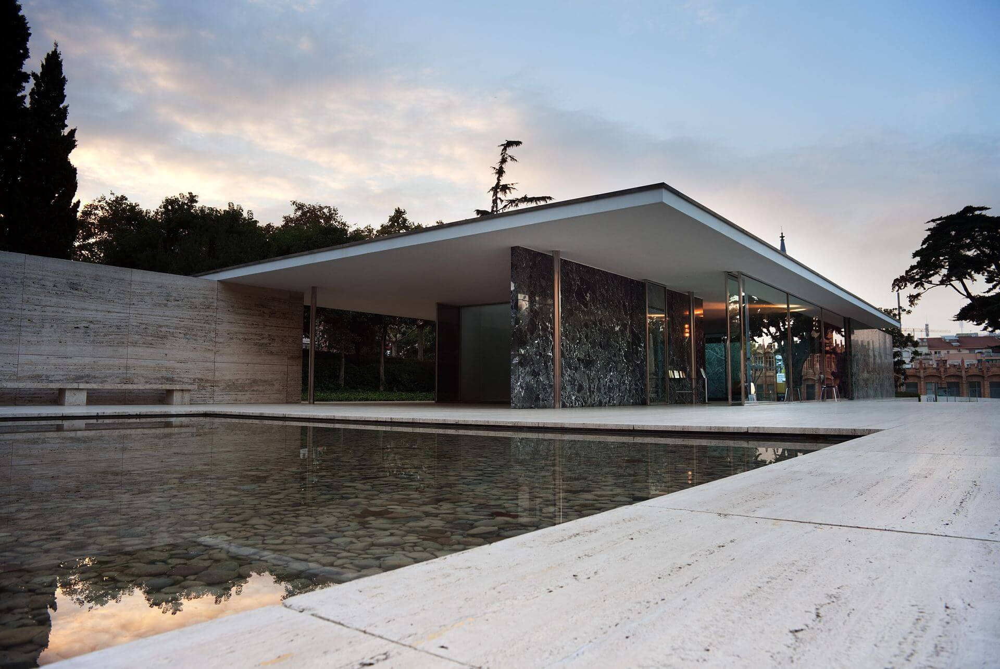
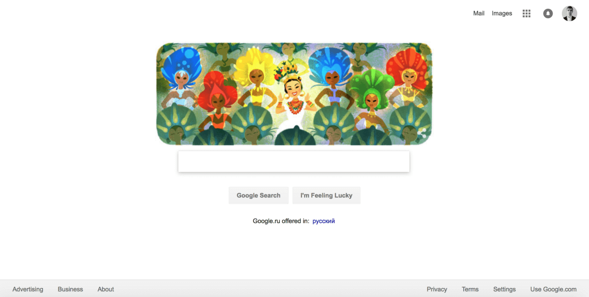

Welcome! This is a place where you will find random news about UX.
As web design focuses more and more on good user experience, designers need to create the most usable and attractive websites possible. Carefully applied minimalist principles can help designers make attractive and effective websites with fewer elements, simplifying and improving users’ interactions.
A Short History Of Minimalist Design Link
Some web designers mistakenly think of minimalism as a primarily aesthetic choice. To avoid the pitfall of focusing only on aesthetics, let’s be clear about the roots of minimalist design.
While it might be a newer trend in web design, the underlying ideas have been around for much longer. When discussing minimalist design, a person might naturally think of traditional Japanese culture. Japanese culture values balance and simplicity. Japanese architecture, interior design, art, and graphic design have long employed minimalist aspects.
As a Western movement, minimalism began early in the 20th century. Influenced by the introduction of modern materials, such as glass and steel, many architects began to employ minimalist designs in their buildings. Ludwig Mies Van der Rohe, the German-American architect, was one of the pioneers of the minimalist movement. He is credited with first applying the phrase “less is more” to architectural design.

What Is Minimalist Web Design?
Today, minimalism has reemerged as a powerful technique in modern web design. It became popular as a reaction to a trend of increasing complexity in web design. (Visual complexity has been shown to affect a user’s perception of a website: The more elements a design has, the more complex it will look to the user.) Applied correctly, minimalism can help us focus our designs in order to simplify user tasks. A study conducted by EyeQuant suggests that clean design results in lower bounce rate. Minimalism has brought additional benefits to websites, in faster-loading times and better compatibility between screen sizes.
Perhaps one of the most well-known examples of minimalism in web design is Google Search. Google has prioritized simplicity in its interfaces ever since its beta offering in the 1990s. The home page is designed entirely around its central search function. Anything unnecessary to the function, other than branding, was avoided.

Its simplicity might lead one to believe that minimalism is uncomplicated, but under the surface lies far more than just “less is more.” Let’s define characteristics of minimalism.
Only the essentials
A minimalist strategy in web design is one that seeks to simplify interfaces by removing elements and content that do not support user tasks. To create a truly minimalist interface, a designer has to prioritize elements rigorously, showing only those elements of the highest importance and stripping away everything that would distract users from what’s important (such as superfluous decorative elements). Every item in a design, whether an image or copy, should have a purpose; it shouldn’t be included unless it’s necessary to make the message clear. As Joshua Becker mentions in the book The More of Less, “You don’t need more space. You need less stuff.”
At the same time, be sure that you aren’t making your users’ primary tasks more difficult by removing or hiding content that they need. The idea is to make the message more clear, not more hidden. Thus, design around the content, and leave just enough visible elements (such as primary navigation) so that users don’t get confused.